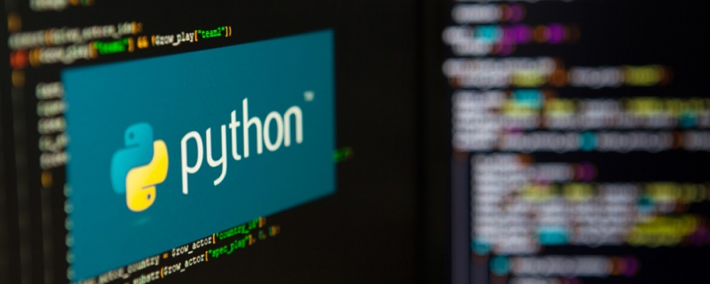

Рейтинг популярности языков
программирования – 10 лучших вариантов
программирования – 10 лучших вариантов
Python
Python относительно легко читаем, часто его преподают на курсах начинающим программистам. Считается языком общего назначения, поэтому подходит для решения множества задач. Собственно, благодаря этому и популярен. Вообще, чтобы им воспользоваться и применить для собственных нужд в ИТ, не обязательно даже быть программистом.
На официальном сайте Python этот язык описывается так: «Python — это язык программирования, который позволяет вам работать быстрее и более эффективно интегрировать ваши системы». Он очень прост в изучении как для начинающих веб-мастеров, так и для опытных, работающих с другими языками, программистов.

С#
С# схож с языком С, но все-таки это не то же самое, что С и С++. Язык в 2000 году разработала Microsoft в качестве элемента платформы .NET. Он и теперь больше «заточен» под Windows, хотя уже интегрируется с разными платформами. По мнению специалистов Microsoft, это «современный, объектно-ориентированный и компонентно-ориентированный язык программирования».
С и C++
Очень схожие языки, поэтому часто в рейтингах упоминаются как идентичные. Tiobe в рейтинге популярности языков программирования отдает пальму первенства именно С, считая, что ему принадлежит 14,32 % рынка. Другие компании выражают менее оптимистичные суждения. В различных списках С++ чаще всего оказывается на четвертом или пятом месте.
С и С++ относятся к категории языков общего назначения. Год создания С – 1972, а С++ увидел свет в 1985. Главное, что их отличает – это наличие классов в С++. Язык С обладает высокой производительностью и возможностью применения на самых разных платформах. Его задействуют в операционных системах, компиляторах, микроконтроллерах, в интерпретаторах.

PHP
Сначала РНР означало «Персональная домашняя страница», но на сегодняшний день это расшифровывается как «PHP: Препроцессор гипертекста». Больше всего язык востребован на веб-серверах, отлично интегрируется с большим числом платформ и операционных систем. На официальном сайте про РНР пишут так: «поддерживает все, от вашего блога до самых популярных веб-сайтов в мире». «Он достаточно мощный, чтобы быть ядром самой большой системы ведения блогов в сети (WordPress)!
Его достаточно, чтобы запустить крупнейшую социальную сеть (Facebook*)! Также он достаточно легко станет первым серверным языком для новичка!». Язык взаимодействует со многими широко используемыми базами данных вроде MySQL, PostgreSQL, Oracle, Sybase, Informix и Microsoft SQL Server.

Swift
В топе языков программирования для мобильных приложений Swift — явный лидер, и популярность его растет. Он точно пригодится тем, кто собирается писать приложения для iPhone, iPad или Apple Watch. Язык создан в 2014 году, и его тут же стали использовать для iOS и macOS вместо Objective-C. Впрочем, хоть R и поддерживает отличные от Apple платформы вроде Linux, Windows и Android, но используется на них крайне редко. Сам Apple пишет про R, что это «мощный язык программирования, который также легко выучить».
Ruby
Разработанный в 1990-х годах язык, имеющий объектную ориентированность и активно используемый во фреймворках серверных приложений Rails (Ruby on Rails). На сайте про Ruby пишут, что это «лучший друг программиста», который придуман специально, чтобы упростить для людей процессы чтения и письма. Ruby создавался под влиянием Perl, Smalltalk, Eiffel, Ada, Basic, Lisp.
Был разработан в 2009 году программистами из Google Робом Пайком, Робертом Гриземером и Кеном Томпсоном. В данном рейтинге популярности языков программирования Go – один из самых молодых представителей. В 2011 году была представлена версия 1.0. Изначально данный объектно-ориентированный язык разрабатывался в качестве альтернативы для С и С++.
JavaScript
Язык быстрый, адаптированный под любые платформы. С его помощью разработчик задает поведение страницы в ответ на действия посетителей. На JavaScript программируется работа всплывающих окон, выпадающих меню, экранной клавиатуры, то есть пользователь видит кучу информации на странице, не перезагружая ее.

Java
Имеет адаптацию под разные платформы, массу библиотек и поддерживается многочисленным сообществом разработчиков. Благодаря кроссплатформенности единожды написанная программа работает и в Windows, и в Linux, и в MacOS. Обширные библиотеки позволяют задействовать Java для создания графики, небольших игр, обрабатывать звуки. А наличие большого сообщества – ценный плюс для начинающих программистов, благодаря этому им доступны готовые куски самых разных кодов, и всегда найдется тот, кто поможет ответить на возникшие в процессе работы вопросы.
Спектр применения Java очень широк, он задействован буквально везде. На нем пишут программы для серверов, создают мобильные приложения. Для последних, кстати, в последнее время все чаще применяют язык Kotlin. Однако те, что написаны на Java (а их огромное количество), все-таки приходится обновлять и поддерживать.